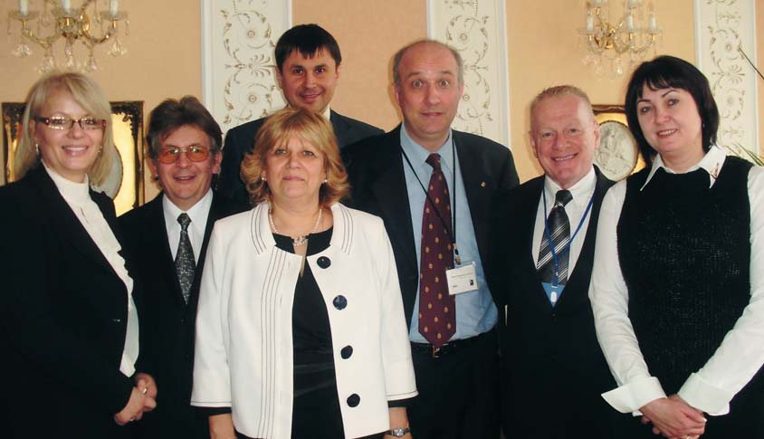
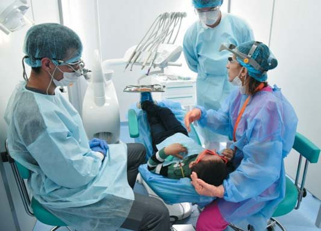
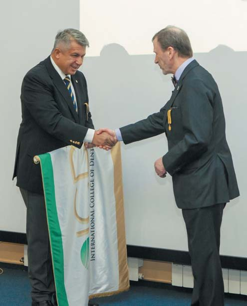
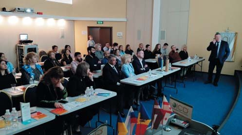
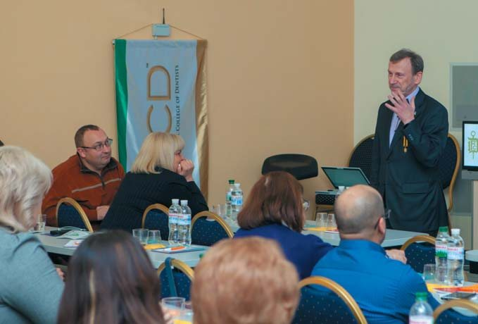
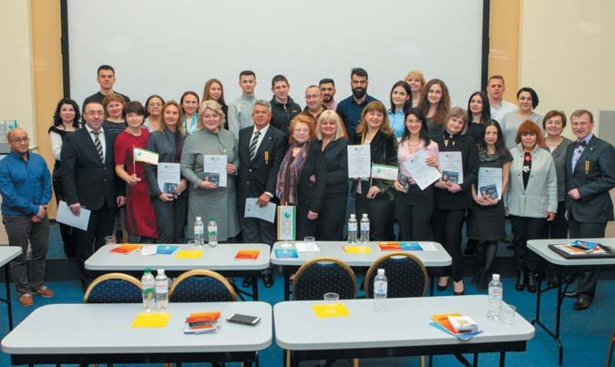

Міжнародна колегія стоматологів (ICD) · журнал «ДентАрт» 2019 №4
Міжнародна колегія стоматологів (ICD)
Оксана Дєньга та редакція,за матеріалами www.dentalreview.news, www.icd.org, www.icd-europe.com
Співпраця стоматологів України з Міжнародної колегії стоматологів (ICD)
Співпраця українських стоматологів з Міжнародною колегією стоматологів фактично розпочалася з приїзду в Україну 2005 року американського професора Пола Беккера, який працював три роки на кафедрі стоматології дитячого віку Одеського національного медичного університету (ОНМедУ). За нашою ініціативою і за підтримки Пола Беккера за грантами ICD в Одесу в різні періоди для читання лекцій співробітникам ОНМедУ, Інституту стоматології та щелепно-лицевої хірургії Національної академії медичних наук України (ДУ «ІСЩЛХ НАМН») та інших університетів нашої країни запрошувалися професори Ліза Папаяннулис (Департамент педіатричної стоматології Афінського університету, Школа стоматології; тема лекцій – «Профілактика і лікування в дитячій стоматології»), Сабіна Мерешо (Женевський медичний університет; тема лекцій – «Лікування карієсу та його ускладнень у дітей»), Корадо Паганеллі (директор Школи спеціалізації в ортодонтії Університету Брешіа; тема лекцій – «Лікування зубощелепних аномалій»), Ян ван Хоув (Голландія; тема лекцій – «Захворювання тканин пародонту»), Іоніс Факітсас (завідувач кафедри оральної і щелепно-лицевої хірургії у військово-морському госпіталі для ветеранів в Афінах, Греція; тема лекцій – «Хірургічне лікування незарощення ротової порожнини»). Сам професор Пол Беккер читав лекції з епідеміології та клініки флюорозу зубів.
За грантами ICD у 2008 році студентка ОНМедУ Анастасія Дєньга стажувалася в Академії післядипломної освіти в Афінах (Греція), на кафедрі дитячої стоматології та ортодонтії, і на стоматологічному факультеті Женевського медичного університету.
Представники України (професор Оксана Дєньга) виграли на конкурcі ICD в Італії (м. Брешіа) у 2011 році грант на навчальну програму зі стоматології для університетів України.
За роки співробітництва з ICD Інститут стоматології та щелепно-лицевої хірургії НАМН України і Одеський медичний університет проводили щорічні науково-практичні конференції за участю представників Міжнародної колегії стоматологів, присвячені актуальним питанням стоматології.

Оксана Дєньга, професор, завідувачка кафедри стоматології дитячого віку ОНМедУ і завідувачка відділу епідеміології та профілактики основних стоматологічних захворювань, дитячої стоматології та ортодонтії Інституту стоматології та щелепно-лицевої хірургії НАМН України.
Компанія «Генрі Шейн» і Міжнародна колегія стоматологів (ICD) надають допомогу молдавським дітям
Третій рік поспіль компанія «Генрі Шейн» і Міжнародна колегія стоматологів підтримують Програму державного партнерства між Республікою Молдова і штатом Північна Кароліна, США, з надання стоматологічної допомоги молдавським дітям.
У рамках цієї програми компанія «Генрі Шейн» і Міжнародна колегія стоматологів (ICD) забезпечили приїзд стоматологічної бригади зі Сполучених Штатів для проведення найважливішого стоматологічного лікування і забезпечення освіти у сфері гігієни ротової порожнини для дітей із малозабезпечених сімей у Кишиневі та Баїті.
Цього року місія відбулася у співробітництві зі стоматологічною клінікою Кишинівського університету медицини і фармації, а також стоматологічною клінікою Diadent.

П’ять стоматологів – д-р Джіні Джінніс, д-р Бертон Хорвіц, д-р Стівен Маклер, д-р Шеріл Сігел і д-р Бенджамін Томас – працювали разом із шістьма студентами-стоматологами з Університету Північної Кароліни, США, і шістьма молдавськими студентами. Вони надали таку допомогу, як пломбування зубів, покриття зубів коронками, професійна гігієна, видалення зубів і герметизація фісур, 120 дітям. Крім того, команда навчала правильних стоматологічних процедур студентів-стоматологів з Кишинівського університету медицини і фармації.
Д-р Бертон Хорвіц (Університет Північної Кароліни) так оцінив цю співпрацю: «Навчання, яке відбувається між лікарями та студентами, і позитивний вплив на здоров’я ротової порожнини дітей, – видатні і неоціненні».
Безоплатно надані матеріали – це ініціатива «Генрі Шейн» у рамках глобальної програми корпоративної соціальної відповідальності цієї компанії. Підтримка Програми державного партнерства між Молдовою і Північною Кароліною є частиною довгострокового співробітництва компанії «Генрі Шейн» з Глобальним візіонерським фондом ICD, створеним для поліпшення стоматологічного здоров’я населення і розвитку стоматологічної професії.
Крім того, компанія «Генрі Шейн» – глобальний спонсор заходів, присвячених сторіччю від дня заснування ICD, «Святкування перших 100 років», кульмінацією яких стане святковий банкет і міжнародна церемонія офіційної інавгурації 13 листопада 2020 року в м. Нагоя, Японія.
Еллі Найтінгейл, координатор компанії «Генрі Шейн» із безкоштовного надання стоматологічної продукції, пов’язаної з ICD, і один із засновників «Ангелів Генрі», прокоментував мету програми так: «Завдання компанії «Генрі Шейн» у тому, щоб розширити доступ до правильного догляду за зубами для нужденних і допомогти в нарощуванні потенціалу у сфері надання медичної допомоги. Ми раді підтримати цю партнерську програму, яка поліпшує стоматологічне здоров’я дітей, поглиблює їхні знання про важливість догляду за ротовою порожниною, а також навчає молдавських студентів-стоматологів. Це ідеально підходить для нашої програми «Генрі Шейн Турбота».
«Ангели Генрі» були створені в січні 2011 року й організували понад 40 проектів, в яких взяли участь понад 400 добровольців, котрі пропрацювали понад 4000 годин у Великій Британії, Ірландії та Південній Африці.
За матеріалами сайту www.dentalreview.news
ICD: сторіччя служіння здоров’ю людства
Ідея створення Міжнародної колегії стоматологів народилася у 1920 році на прощальному вечорі в Токіо для доктора Луї Оттофі, коли він повертався додому в Сполучені Штати після 23 років стоматологічної практики на Філіппінах і в Японії. Колега доктор Цурукіті Окумура закликав доктора Оттофі створити міжнародну організацію.
Через шість років, на сьомому Міжнародному конгресі стоматологів у Філадельфії, США, група стоматологів знову зібралася, щоб завершити формулювання концепції ICD, а потім напередодні нового 1927 року співзасновники доктори Оттофі та Окумура оголосили про створення Міжнародної колегії стоматологів. Першим її президентом був обраний Андрес О. Вебер з Гавани, Куба.
Спочатку 250 стоматологів зі 162 країн склали присягу стоматологічного братства. Група була обрана на основі міжнародної репутації та участі у Всесвітній федерації стоматологів (FDI). Кожен член Колегії отримав завдання запропонувати кандидатури інших стоматологів для членства. Стоматологи, яких приймають в організацію, ставлять FICD з їх ім’ям після букв-скорочень наукового ступеня.

Цілі і завдання Міжнародної колегії стоматологів
Міжнародна колегія стоматологів – провідна почесна стоматологічна організація, створена з метою визнання видатних професійних досягнень і заслуг, а також постійного розвитку стоматологічної професії на благо всього людства.
Основні цілі ICD:
- Просувати мистецтво і науку стоматології для здоров’я і доброжитку суспільства на міжнародному рівні.
- Заохочувати післядипломну освіту і дослідження в галузі стоматології та суміжних дисциплін.
- Прагнути об’єднати видатних представників стоматологічної професії світу з метою стимулювання росту і поширення стоматологічних знань та заохочення обміну доброю волею між представниками цієї професії.
- Розвивати співробітництво і сприяти теплим відносинам між стоматологами та представниками інших професій у галузі охорони здоров’я.
- Співпрацювати зі стоматологами та різними організаціями для профілактики і контролю захворювань ротової порожнини.
- Зберігати і підвищувати гідність професії, пропонуючи всім членам підтримувати високі естетичні стандарти і професійну поведінку.
- Увічнити історію стоматології.
- Визнавати видатне служіння професії і надавати гранти в Колегії.
- Заохочувати і підтримувати проекти гуманітарного характеру.

Усі члени Колегії, незалежно від їх рідної мови чи країни проживання, дотримуються одного універсального девізу: «Визнаємо служіння і можливість служити». Ці слова, які з’являються на фотографіях, підкреслюють цінності, які є найважливішими для членів Міжнародної колегії стоматологів і реалізуються в її проектах по всьому світу.
Стоматологи, які отримали престижне звання FICD (член Міжнародної колегії стоматологів), нині живуть і працюють у 122 країнах світу.
Членство в Колегії надається тільки на запрошення. Кандидатури стоматологів мають пройти строгий процес колегіальної оцінки, що веде до визнання «видатних професійних досягнень, гідного служіння та відданості справі безперервного розвитку стоматології на благо людства».
Структура ICD
Міжнародна колегія стоматологів поділяється на секції. Стоматологи європейських країн входять до секції V. Сьогодні Європейська секція розподілена на 15 дистриктів: 1 – Австрія, 2 – країни Бенілюксу, 3 – Скандинавія, 4 – Англія, Уельс, Шотландія, 5 – Франція, 6 – Німеччина, 7 – Греція і Кіпр, 8 – Ірландія, 9 – Ізраїль і Мальта, 10 – Італія, 11 – Португалія, 12 – Іспанія, 13 – Швейцарія, 14 – країни Центральної і Південної Європи (Албанія, Болгарія, Боснія, Герцеговина, Північна Македонія, Румунія, Сербія, Словенія, Угорщина, Хорватія), 15 – країни Центральної і Північної Європи (Білорусь, Грузія, Естонія, Латвія, Литва, Молдова, Польща, Словаччина, Україна, Чехія).
Дистриктами керують регенти. Регентом недавно створеного дистрикту 15, куди входить Україна, є Сергій Радлінський. Але ще будучи віце-регентом по Східній Європі дистрикту 14, він став організатором Міжнародної науково-практичної конференції «Служіння професії стоматолога», яка відбулася 23 березня 2019 року в Навчальному центрі «Аполлонія» у Полтаві і пройшла в дусі 100-річчя ICD. У ній взяли участь понад 50 відомих стоматологів України і колеги з Грузії, Словенії, Латвії та Молдови. Регент дистрикту 14 Томіслав Юкич виступив на конференції з доповіддю «Міжнародна колегія стоматологів – 100 років служіння стоматології».

На честь сторіччя служіння людству, визнання видатних стоматологів і прагнення до міжнародної співпраці протягом 2020 року члени Колегії по всьому світу візьмуть участь у заходах, присвячених сторіччю від дня її заснування. Святкування завершиться засіданням Міжнародної ради в м. Нагоя, Японія, де відбудеться симпозіум з гуманітарних та освітніх проектів Колегії, а також церемонія вступу нових членів.

За матеріалами сайтів www.icd.org, www.icd-europe.com